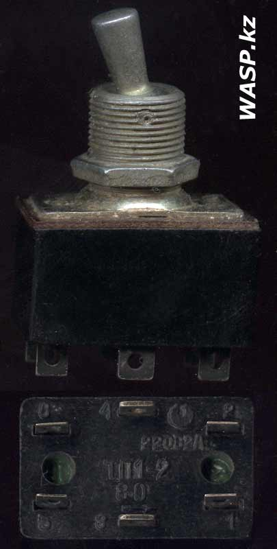
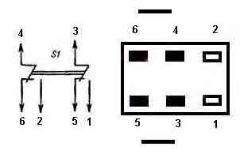
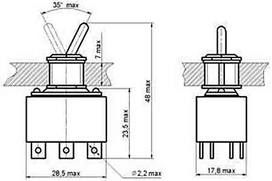

Тумблеры ТП1-2
Контактные тумблеры ТП1-2 с ручным рычажным приводом для объемного монтажа. Применяются в радиоэлектронной, приборной и специальной технике. Изготавливаются в климатическом исполнении УХЛ и В. Варианты исполнения — тумблер с металлическим либо с пластмассовым узлом.



Технические характеристики тумблера ТП1-2:
- Род тока - постоянный, переменный
- Вид нагрузки - активная
- Напряжение - не менее 1,6 В и не более 220 В
- Ток - не менее 0,001 А и не более 2 А
- Максимальная коммутируемая мощность 220 Вт
- Масса, не более - 26 грамм
- Сопротивление контакта, не более - 0,02 Ом
- Электрическая прочность изоляции - 1100 В
- Сопротивление изоляции, не менее - 1000 МОм
- Усилие переключения - от 3,9 до 14,7 Н
- Содержание драгоценных металлов - серебро 0.0754 / 0,21968